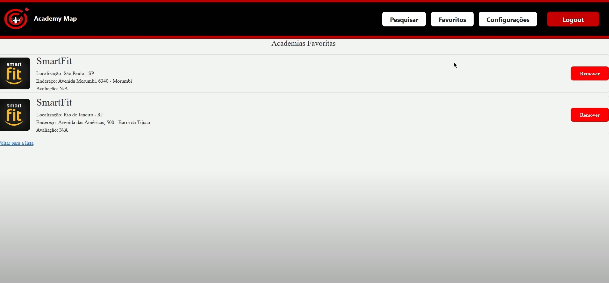

Introdução
Informações básicas do projeto como nome e membros da equipe.
Informações Gerais
- Projeto:Academy Map
- Repositório GitHub: G3 - Mapeamento Academia
- Membros da equipe:
Contexto
Detalhes sobre o espaço de problema, justificativas e os objetivos do projeto.
Problema
Percebemos que, encontrar uma academia que atenda às necessidades específicas (sejam elas: localização, qualidade dos equipamentos, atenção dos funcionários, higiene) de cada indivíduo pode ser um desafio devido à falta de informações centralizadas e facilmente acessíveis sobre as opções disponíveis.
Objetivos
O objetivo geral do projeto é o desenvolvimento de um software que mapeia, avalia e favorita as academias pelo Brasil, além de facilitar o processo de cadastro e pagamento, melhorando a conexão entre os alunos e os ambientes voltados para a prática de atividades físicas.
Justificativa
De acordo com alguns relatos (histórias de usuário), percebemos que encontrar uma academia que atenda às necessidades específicas de cada indivíduo pode ser um desafio devido à falta de informações centralizadas e facilmente acessíveis sobre as opções disponíveis. Este problema se torna ainda mais evidente para pessoas que viajam e não conhecem a região, resultando em dificuldades adicionais na busca por academias que correspondam às suas expectativas e preferências.
Público-alvo
A Academy Map tem um público bastante abrangente, ou seja, todos que quiserem achar uma academia podem utilizar nosso software, mas ao mesmo tempo temos um nicho bastante específico, aqueles que estão viajando tanto a trabalho quando a lazer e que não conhecem nenhuma academia no lugar onde estão que possua os pontos específicos de seu agrado. Um exemplo é Bruno, um neurocirurgião de 45 anos que é bastante comprometido com seu trabalho, objetivos e sonhos de vida. Como já possui grande experiência no que faz, Bruno frequentemente participa de congressos, onde palestra sobre seu trabalho. No entanto estes eventos nunca são nos mesmos lugares então não consegue encontrar academias de seu agrado, além de não poder gastar muito tempo com processos como cadastro e pagamento que geralmente demoram pouco mais de 10 minutos.
Concepção (Design Thinking)
Detalhes do processo de discovery do projeto.
Apresente o processo de discovery do projeto. Com foco na experiência do usuário, esse processo abrange a compreensão do contexto do problema e das características do usuário, a definição do problema, a geração de ideias, a prototipagem e a elaboração de uma proposta de solução
Processo de Design Thinking
O arquivo que se segue apresenta o resultado desse processo.
Apresente o processo de Design Thinking realizado pelo grupo e documentado por meio do software Miro. No documento apresentado, devem ser incluídos: (1) a matriz CSD, (2) o mapa de stakeholders, (3) as personas, (4) as respectivas propostas de valor e (5) o processo de ideação identificando as ideias levantadas e sua priorização.
Especificações do Projeto
Documentação das especificações do projeto.
Apresente as especificações do projeto, incluindo as histórias de usuário e os requisitos funcionais e não funcionais.
Histórias de Usuários
Com base na análise das personas foram identificadas as seguintes histórias de usuários:
Apresente aqui as histórias de usuário que são relevantes para o projeto de sua solução. As Histórias de Usuário consistem em uma ferramenta poderosa para a compreensão e elicitação dos requisitos funcionais e não funcionais da sua aplicação. Se possível, agrupe as histórias de usuário por contexto, para facilitar consultas recorrentes à essa parte do documento.
EU COMO...PERSONA |
QUERO/PRECISO...FUNCIONALIDADE |
PARA...MOTIVO/VALOR |
|---|---|---|
| Usuário do sistema | Como um Usuário da Academia, quero ter acesso a uma ampla variedade de equipamentos | para que eu possa alcançar meus objetivos de fitness |
| Usuário do sistema | Como um Usuário da Academia, quero que a academia tenha horários flexíveis | para que eu possa malhar antes ou depois do trabalho |
| Usuário do sistema | Como um Usuário da Academia, quero que a academia tenha uma capacidade adequada para acomodar todos os clientes, mesmo nos horários de pico | para que eu não precise esperar para usar os equipamentos |
| Usuário do sistema | Como um Usuário da Academia, quero poder me cadastrar rapidamente e pagar através de um aplicativo | para economizar tempo e facilitar meu acesso aos serviços da academia |
| Administrador | Como um Administrador da Academia, quero oferecer diferentes planos de adesão, incluindo um plano mensal e um plano anual com descontos | para atender às necessidades de todos os clientes e oferecer um ótimo valor pelo preço |
| Administrador | Como um Administrador da Academia, quero garantir que nossos equipamentos sejam de alta qualidade e que nossa equipe seja experiente | para oferecer o melhor serviço possível aos nossos clientes |
Requisitos
As tabelas que se seguem apresentam os requisitos funcionais e não funcionais que detalham o escopo do projeto.
Com base nas Histórias de Usuário, enumere os requisitos da sua solução. Classifique esses requisitos em dois grupos:
- Requisitos Funcionais (RF): correspondem a uma funcionalidade que deve estar presente na plataforma (ex: cadastro de usuário).
- Requisitos Não Funcionais (RNF): correspondem a uma característica técnica, seja de usabilidade, desempenho, confiabilidade, segurança ou outro (ex: suporte a dispositivos iOS e Android).
Lembre-se que cada requisito deve corresponder à uma e somente uma característica alvo da sua solução. Além disso, certifique-se de que todos os aspectos capturados nas Histórias de Usuário foram cobertos.
Requisitos Funcionais
| ID | Descrição do Requisito | Prioridade |
|---|---|---|
| RF-001 | Busca de academias utilizando filtros | ALTA |
| RF-002 | Análise e escrita de avaliações | ALTA |
| RF-003 | Aba de favoritos | MÉDIA |
| RF-004 | Atualização de Perfil | BAIXO |
| RF-005 | Pagamento rápido e seguro | BAIXO |
Requisitos Não-Funcionais
| ID | Descrição do Requisito | Prioridade |
|---|---|---|
| RNF-001 | O sistema deve ser responsivo | ALTA |
| RNF-002 | Deve filtrar pesquisas de forma rápida | BAIXO |
| RNF-003 | O site deve ser capaz de suportar vários usuarios | BAIXO |
Projeto de Interface
Artefatos relacionados com a interface e a interacão do usuário na proposta de solução.
Apresente a ideia de interface que está sendo prevista para o projeto. Inclua os wireframes, o user/screen flow e o protótipo interativo.
User/Screen Flow e Protótipo interativo
Artefatos relacionados com a interface e a interacão do usuário na solução proposta.
O fluxo de usuário (User Flow) é uma técnica que permite ao desenvolvedor mapear todo fluxo de telas do site ou app. Essa técnica funciona para alinhar os caminhos e as possíveis ações que o usuário pode fazer junto com os membros de sua equipe. 
Um protótipo interativo apresenta o projeto de interfaces e permite ao usuário navegar pelas funcionalidades como se estivesse lidando com o software pronto. Veja o exemplo a seguir.

Metodologia
Detalhes sobre a organização do grupo e o ferramental empregado.
Nesta parte do documento, você deve apresentar a metodologia adotada pelo grupo, descrevendo o processo de trabalho baseado nas metodologias ágeis, a divisão de papéis e tarefas, as ferramentas empregadas e como foi realizada agestão de configuração do projeto via GitHub.
Coloque detalhes sobre o processo de Design Thinking e a implementação do Framework Scrum seguido pelo grupo. O grupo poderá fazer uso de ferramentas on-line para acompanhar o andamento do projeto, a execução das tarefas e o status de desenvolvimento da solução.
Ferramentas
Relação de ferramentas empregadas pelo grupo durante o projeto.
Liste as ferramentas empregadas no desenvolvimento do projeto, justificando a escolha delas, sempre que possível. Inclua itens como: (1) Editor de código, ferramentas de comunicação, ferramentas de diagramação, plataformas de hospedagem, entre outras.
| Ambiente | Plataforma | Link de Acesso |
|---|---|---|
| Processo de Design Thinking | Miro | https://miro.com/app/board/uXjVKdJngSA=/ |
| Repositório de código | GitHub | https://github.com/ICEI-PUC-Minas-PPLCC-TI/ti-1-ppl-cc-m-20241-2-g3-mapeamento-academia |
| Protótipo Interativo | MavelApp ou Figma | https://www.figma.com/design/ZusyCkHhBF5FDdPr5wbqld/Untitled?node-id=0-1 |
Gestão do Projeto
Divisão de papéis no grupo e apresentação da estrutura da ferramenta de controle de tarefas (Kanban).
Apresente a divisão de papéis e tarefas entre os membros do grupo. Informe quem é o Scrum Master, o Product Owner e os desenvolvedores. Informe também quem é o responsável pela documentação do projeto.
Apresente o quadro de gerenciamento do time (Kanban), seu formato e as experiências na utilização dessa ferramenta (GitHub Projects)
Bernardo Alves - Product Owner
Matheus Silva - Scrum Master
Gabriel Tostes - Responsável pela documentação
Lucas Marinho - Desenvolvedor
Leonardo Kauê - Desenvolvedor
Erik Lima - Desenvolvedor
Solução
Esta seção apresenta todos os detalhes da solução criada no projeto.
Apresente cada uma das funcionalidades que a aplicação fornece tanto para os usuários quanto aos administradores da solução.
Inclua, para cada funcionalidade, itens como: (1) titulos e descrição da funcionalidade; (2) Estrutura de dados associada; (3) o detalhe sobre as instruções de acesso e uso.
Video do Projeto
O vídeo a seguir traz uma apresentação do problema que a equipe está tratando e a proposta de solução.
O video de apresentação é voltado para que o público externo possa conhecer a solução. O formato é livre, sendo importante que seja apresentado o problema e a solução numa linguagem descomplicada e direta.
Utilize o recurso de compartilhamento via embed e inclua o vídeo logo abaixo.
Funcionalidades
Esta seção apresenta as funcionalidades da solução.
Apresente cada uma das funcionalidades que a aplicação fornece tanto para os usuários quanto aos administradores da solução.
Inclua, para cada funcionalidade, itens como: (1) titulos e descrição da funcionalidade; (2) Estrutura de dados associada; (3) o detalhe sobre as instruções de acesso e uso.
Funcionalidade 1 - Cadastro de Usuário
Permite a inclusão de um usuário
- Estrutura de dados: Usuário
- Instruções de acesso:
- Abra o site e preencha os campos com seus dados
- Finalize o cadastro apertando no botão
Funcionalidade 2 - Cadastro de Academias
Permite a inclusão de uma academia
- Estrutura de dados: Academias
- Instruções de acesso:
- Abra o site e preencha os campos com todos os dados da sua academia
- Finalize o cadastro apertando no botão
Funcionalidade 3 - Favoritos
Permite que o usuário coloque academias na sua página de favoritos
- Estrutura de dados:Favoritos
- Instruções de acesso:
- Com o site aberto, abra a página da academia da sua preferência
- Aperte em "Adicionar aos favoritos"
- Em seguida, vá para sua página de favoritos

Funcionalidade 4 - Busca de Academias com mapa
Permite a inclusão, leitura, alteração e exclusão de contatos para o sistema
- Estrutura de dados: Academias
- Instruções de acesso:
- Com o site aberto, vá para a página de busca de academias
- Em seguida, procure a academia da sua preferência
Estruturas de Dados
Descrição das estruturas de dados utilizadas na solução com exemplos no formato JSON.
Apresente as estruturas de dados utilizadas na solução tanto para dados utilizados na essência da aplicação quanto outras estruturas que foram criadas para algum tipo de configuração
Nomeie a estrutura, coloque uma descrição sucinta e apresente um exemplo em formato JSON.
Estrutura de Dados - Usuário
Registro dos usuários do sistema utilizados para login e para o perfil do sistema
{
"id": "f52d",
"name": "alice",
"cpf": "456234456",
"email": "a@gmail.com",
"password": "123"
}
Estrutura de Dados - Academias
Registro das academias do sistema utilizados para login e para o perfil do sistema
{
"login": "smartfit00",
"id": "b080",
"name": "SmartFit",
"location": "Salvador - BA",
"address": "Rua Waldemar Falcão, 323, Salvador",
"image": "https://encrypted-tbn0.gstatic.com/images?q=tbn:ANd9GcSUHtlsyCG7UZpPYtarMtV-rY2QDoNz_m0jtg&s",
"password": "sf"
}
Estrutura de Dados - Favoritos
Registro dos favoritos
{
"id": "5a66",
"userId": "4445",
"academyId": "4955"
}
Estrutura de Dados - Reviews
Registro das reviews dadas pelos usuários
{
"id": "607b",
"userId": 1,
"academyId": "b080",
"rating": 5,
"comment": "boa"
}
Módulos e APIs
Esta seção apresenta os módulos e APIs utilizados na solução.
Apresente os módulos e APIs utilizados no desenvolvimento da solução. Inclua itens como: (1) Frameworks, bibliotecas, módulos, etc. utilizados no desenvolvimento da solução; (2) APIs utilizadas para acesso a dados, serviços, etc.
Fonts:
- Icons Font Face - https://fontawesome.com/
Scripts:
- jQuery - http://www.jquery.com/
- Bootstrap 4 - http://getbootstrap.com/
FAQ
Perguntas e respostas comuns associadas ao projeto.
Apresente uma lista de perguntas e respostas comuns associadas ao projeto. Inclua perguntas como: (1) detalhes de acesso e uso do projeto; (2) informações sobre a instalação e configuração da aplicação; (3) questões sobre a manutenção da aplicação; (4) detalhes sobre a integração da aplicação com outros sistemas; (5) questões sobre a segurança da aplicação.
Referências Bibliográficas
Esta seção apresenta as referências bibliográficas utilizadas no projeto.
Apresente as referências bibliográficas utilizadas no projeto. Inclua itens como: (1) livros, artigos, tutoriais, etc. utilizados no desenvolvimento da solução; (2) links para sites, blogs, etc. utilizados no desenvolvimento da solução.